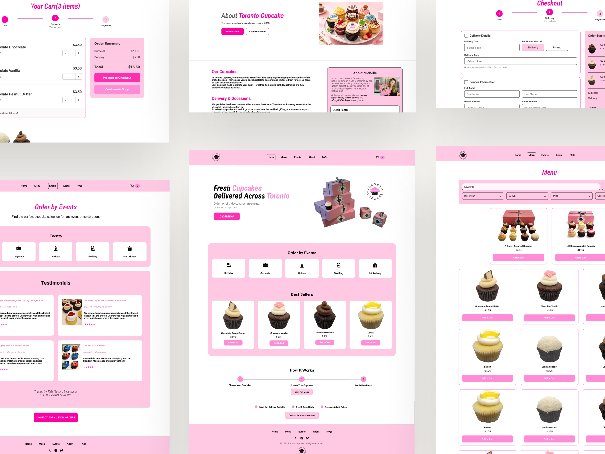
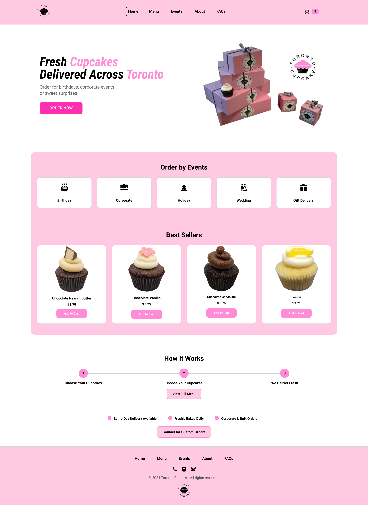
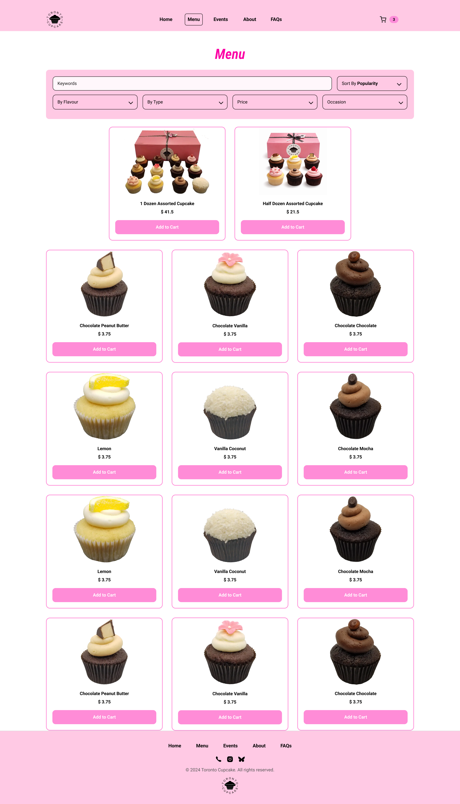
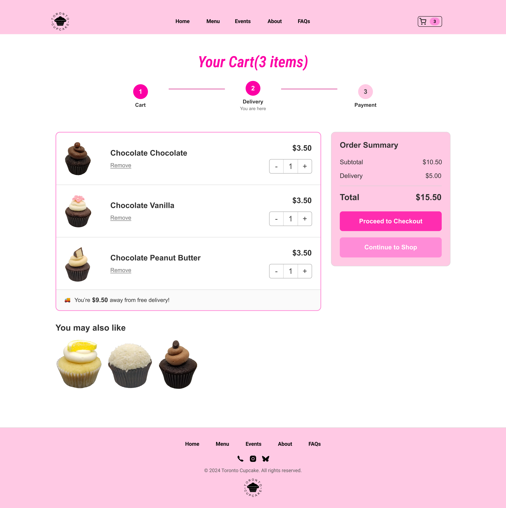
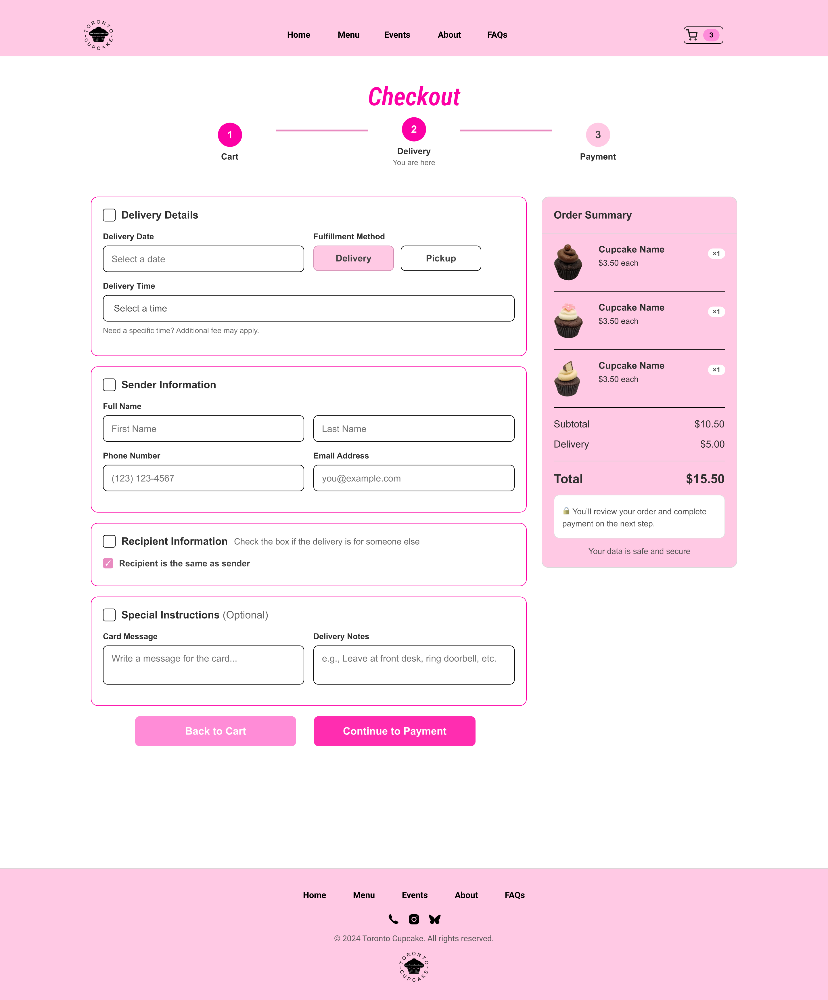

Toronto and GTA customers ordering cupcakes for personal celebrations, gifts, and events.

Toronto Cupcake Redesign
The sweetest part shouldn’t stop at the cupcake.
Toronto Cupcake creates beautifully crafted products, but its ordering experience felt text-heavy and difficult to navigate.
I redesigned the journey to make browsing, choosing, and checking out feel clearer and more delightful.
How might ordering cupcakes feel as delightful as receiving them?
View Interactive Prototype ↓Case Overview
Turning a hard-to-follow ordering path into a clearer e-commerce flow.
Dense content and unclear shopping paths made the ordering process feel harder than necessary.
Create a clearer journey from product discovery to cart review and checkout.
Funnel Diagnosis
The largest drop-off happened before checkout.
The largest drop occurred before checkout began, directing the audit toward cart visibility, review, and checkout entry.
- Landing Page 100%
- Product Page 81.5%
- Add to Cart 70.3%
- Initiate Checkout 27.6%
- Purchase Complete 25.2%
Audit Findings
Where the ordering experience lost its sweetness
Three interface patterns helped explain where the ordering path felt harder to follow.
Finding 01
The starting point was difficult to identify
Evidence Hidden navigation and weak ordering cues made the primary shopping path easy to miss.
Design Opportunity Make the first ordering action visible immediately.
Finding 02
Browsing offered limited comparison support
Evidence Product information, prices, filtering, and cart access were difficult to review in one place.
Design Opportunity Help customers narrow choices and track selections.
Finding 03
Cart and checkout lacked continuity
Evidence Weak hierarchy, repeated fields, and fragmented steps made the transition into checkout harder to follow.
Design Opportunity Create a clearer path from cart review to checkout.
Redesign Strategy
From evidence to a clearer purchase journey
I translated the audit findings into three design principles, then tested hierarchy and flow through low-fidelity wireframes.
Make the next action obvious
Users should immediately understand how to start or continue ordering.
Reduce decision effort
Products should be easier to narrow, compare, and review.
Preserve confidence
Cart and checkout should keep price, progress, and next steps visible.
Exploring the structure before the visual system
The wireframes focused on entry points, product comparison, cart review, and checkout progression before visual styling.
Key Improvements
Designing a sweeter ordering journey
Each decision addressed a moment where customers needed clearer direction, easier comparison, or greater confidence.
Decision 01
Help customers start ordering sooner
Challenge
The original homepage did not provide a clear starting point for shopping.

Design Response
- Visible primary navigation
- A prominent Order Now action
- Occasion shortcuts and best sellers
Why It Matters
Making the first action obvious reduces hesitation at the beginning of the journey.
Decision 02
Make choosing feel more manageable
Challenge
An unstructured product list made it difficult to narrow and compare options.

Design Response
- Keyword search
- Sorting and filters
- Visible prices and product details
Why It Matters
Structured browsing reduces the effort required to reach a decision.
Decision 03
Build confidence before checkout
Challenge
Customers had limited visibility and control over their selections before continuing.

Design Response
- Editable quantities
- Persistent order summary
- Clear checkout hierarchy
Why It Matters
A transparent review step helps customers continue with fewer doubts.
Decision 04
Keep momentum through checkout
Challenge
Repeated fields and fragmented steps made checkout feel longer than necessary.

Design Response
- Progress indicator
- Grouped form sections
- Same-as-sender option
Why It Matters
Breaking the task into clear sections reduces cognitive load and repeated entry.
Supporting Experience
Extending the experience beyond checkout
The same visual system was extended across event planning, brand storytelling, and customer support to create a more consistent website experience.
Supporting celebration, corporate, and custom-order discovery.
Building trust through the brand story and service values.
Reducing uncertainty around ordering, delivery, and ingredients.
Reflection
What this redesign taught me about commerce UX.
What changed in my thinking
I began by treating the project as a visual cleanup, but the funnel analysis shifted my focus toward uncertainty across the purchase journey. The redesign became less about modernizing individual pages and more about helping customers understand what to do next.
What remains unproven
The concept still needs task-based usability testing and post-launch funnel comparison before its effect on ordering confidence or completion can be confirmed.
Next to validate Ordering-entry success · Product-finding time · Checkout completion
Prototype
Explore the final Toronto Cupcake ordering flow.
The interactive prototype shows the redesigned path from browsing cupcakes to reviewing the cart and completing delivery details.